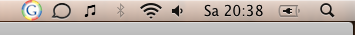

Published 26th July 2008
I was quite surprised when I saw a Google icon show up in my menubar today:
Not only did this icon look absolutely horrid, I can't even remember installing a Google Updater. The only Google application I installed was the App Engine Launcher for OS X, and it doesn't have any updater-options nor does the documentation mention a single word about it.
So I went through a few emails from the google-appengine mailing list. It turns out that the Google App Engine Launcher for OS X also installs the Google Software Update Agent and adds it as a startup item — without mentioning it to the user.
Disabling the startup item can be done by deleting the file ~/Library/LaunchAgents/com.google.keystone.agent.plist or adding a new "Disabled" property to it (in case you want to keep the file):
<key>Disabled</key>
<true/>
It's kind of surprising to see such a behavior from Google, and I'm sure that I'm not the only user who is slightly upset about this.